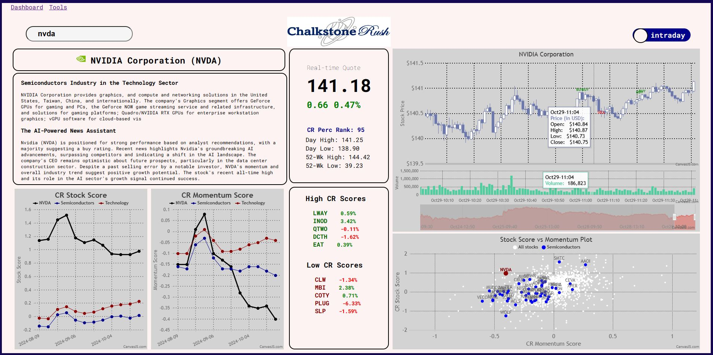
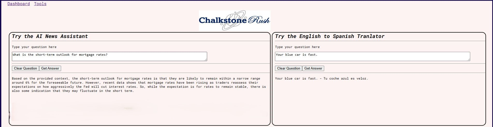

The main Dashboard page features a stock summary.
It includes a description and an AI-powered news summary on the top left.
There is a real-time quote and chart section as well in the top half of the dashboard. The bottom half shows
a Chalkstone Rush quantitiave score time-series chart and a scatter plot for industry industry analysis.

The Tools page features a different AI apps. The AI News Assistant is a RAG application
that will answer financial, economic and capital markets questions.
The Translator is a custom encoder-decoder model using transformers. Please note, both models are based on limited datasets and are for demo purposes only.

>